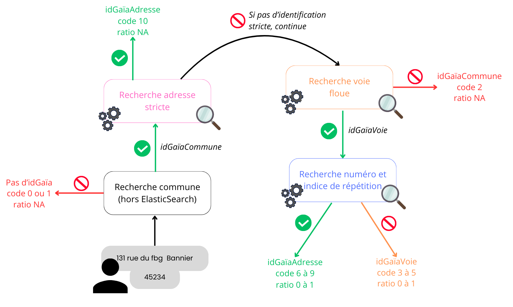

Identification d’adresses avec ElasticSearch
Raya Berova & Benoît Hurpeau (DMRG)
28 novembre 2024
Plan de la présentation
1️⃣ Contexte
2️⃣ Utilisation du référentiel Gaïa
3️⃣ Moteur de recherche ElasticSearch
4️⃣ Algorithme d’identification d’adresses
5️⃣ Performances de l’algorithme d’identification
6️⃣ Discussion
1️⃣ Introduction
Origine du projet
- Besoin d’un référentiel complet, stable, fiable, mis à jour.
- Faciliter la gestion des adresses au sein du SSP.
- Clients : Résil, Géoloc, DMTR…
Gaïa : Référentiel Géographique d’Adresses avec Informations Géolocalisantes.
Une adresse
20 bis avenue de la marne 92049
Géométrie de l’adresse
Exemple: “88 avenue verdier | 92049†reliée à sa parcelle
Le référentiel Gaïa
Identifiants Gaïa
Identifiant unique et stable pour assurer le suivi des objets dans le temps.
Trois niveaux :
- Identifiant adresse
- Identifiant voie
- Identifiant commune
Gestion des scissions et fusions de communes.
Construction du référentiel
Sources fiables :
- Majic : Mise à jour des informations cadastrales.
- BAN : Base Adresse Nationale.
- RCA : Référentiel Commun d’Adresses.
Au moins une mise à jour par trimestre (avec conservation des identifiants Gaïa).
D’autres données
- Polygones du bâti.
- Polygones Parcelles du cadastre.
- Polygones QPV, zonages infra, iris.
Pas d’identifiant Gaïa, donc pas de suivi dans le temps de ces objets.
Exemples de géométries
Exemple de géométries d’adresses, parcelles et bâtis

Quelques métriques sur le référentiel
- Nombre d’adresses ≃ 27 millions.
- Nombre de voies ≃ 3 millions.
Plan de la présentation
1️⃣ Contexte
2️⃣ Utilisation du référentiel Gaïa
3️⃣ Moteur de recherche ElasticSearch
4️⃣ Algorithme d’identification d’adresses
5️⃣ Performances de l’algorithme d’identification
6️⃣ Discussion
2️⃣ Utilisation du référentiel Gaïa
Différents besoins au sein du SSP
- Résil :
- Identification le(s) adresse(s) des individus.
- Regroupement des adresses avec différents identifiants Gaïa mais qui représentent le même lieu.
- Identification le(s) adresse(s) des individus.
- Géoloc : identification du référentiel Géoloc et génération de leur nouveau référentiel.
- Autres utilisateurs possibles :
- Identification des adresses sur les certificats de décès.
- Identification des adresses de Sirus.
- Identification des adresses sur les certificats de décès.
Besoin d’identification des adresses textuelles
Trouver l’identifiant d’adresse à partir d’un libellé d’adresse plus ou moins correcte.
- Besoin visiblement récurrent au sein du SSP.
- Indispensable pour construire et mettre à jour le référentiel.
Il faut donc un moteur de recherche ⚙️.
Plan de la présentation
1️⃣ Contexte
2️⃣ Utilisation du référentiel Gaïa
3️⃣ Moteur de recherche ElasticSearch
4️⃣ Algorithme d’identification d’adresses
5️⃣ Performances de l’algorithme d’identification
6️⃣ Discussion
3️⃣ Moteur de recherche ElasticSearch
Adresses à retrouver dans Gaïa
Exemple d’adresses à retrouver :
| Adresse à retrouver | COG | Code Postal | Libellé commune |
|---|---|---|---|
| 131, rue du fbg Bannier | 45000 | Orléans | |
| 0033 ave J. Jaurès | 92040 |
Adresses dans Gaïa :
| Adresse | COG |
|---|---|
| 131 rue du faubourg bannier | 45234 |
| 33 avenue jean jaures | 92040 |
Un moteur de recherche ⚙️
- Google : recherche par mot clé.
- Pour la recherche d’adresse :
- Google Maps.
- Addok : moteur de recherche de la BAN.
ElasticSearch
- Créé en 2010 par Shay Bannon.
- Moteur ⚙️ utilisable en n’importe quel langage de programmation (requêtes HTTP).
- Faire des recherches rapides sur tout type de données (textes, objets géométriques…).
C’est quoi concrètement ElasticSearch ?
ElasticSearch : logiciel pour l’indexation et la recherche de données.
Utilisation en pratique avec Python : packages elasticsearch et elasticsearch-dsl.
Pourquoi ElasticSearch pour la recherche textuelle ?
| Critères | ElasticSearch | SQL | Addok |
|---|---|---|---|
| Recherche de texte avancée | ✅ | ⌠| ✅ |
| Personnalisation des recherches | ✅ | ⌠| ⌠|
| Rapidité | ✅ | ✅ | ✅ |
| Précision | ✅ | ⌠| âš ï¸ |
| Facilité d’implémentation | ⌠| ✅ | ✅ |
| Maintenance | âš ï¸ | ✅ | ⌠|
Étape 1 : pouvoir comparer l’adresse recherchée avec les données Gaïa.
Filtres
- Normaliser le texte pour la comparaison.
- Pour les données du référentiel ET pour les adresses recherchées.
Filtres implémentés
- Lowercase
- Asciifolding
- Ponctuation
- Séparation des nombres et lettres (ex : 1er → 1 er)
- Suppression des espaces supplémentaires
- Suppression des “0†devant les nombres (ex : 0033 → 33)
- Prise en compte des synonymes (ex : ave = avenue, st = saint)
Étape 2 : définir un score pour évaluer la pertinence.
Base de données classique
Exemple
| idVoie | nom de voie |
|---|---|
| A | du general leclerc |
| B | du general charles de gaulle |
| C | du point du jour |
| D | verdier |
| E | des cours |
Recherche par mot
Pour chaque nom de voie du référentiel, compter le nombre de mots qui matchent 🯠avec les mots de l’adresse recherchée.
Exemple : score avec tokenizer “mot†de “88 avenue du general charles de gaulle”
| idVoie | nom de voie | score |
|---|---|---|
| A | du general leclerc | 2 |
| B | du general charles de gaulle | 5 |
| C | du point du jour | 2 |
| D | verdier | 0 |
| E | des cours | 0 |
Score avec tokenizer “mot”
Tokenizer = façon de découper le texte recherché et ciblé.
Pour retourner la voie la plus pertinente, on construit un score pour chaque voie : \[ score_{voie} = \sum_{\text{∀m} \in \text{M}} {nb\_occurrence}_m \]
m = mot.
M = ensemble des mots de l’adresse recherchée.
Dans une grande base de données, c’est extrêmement long.
Étape 3 : utiliser un index inversé. Mais qu’est ce donc ?
Index inversé mot
Exemple
| idVoie | nom de voie |
|---|---|
| A | du general leclerc |
| B | du general charles de gaulle |
| C | du point du jour |
| D | verdier |
| E | des cours |
| mot | occurrences |
|---|---|
| general | {“A”: 1, “B”: 1} |
| jour | {“C”: 1} |
| du | {“A”: 1, “B”: 1, “C”: 2} |
| cours | {“E”: 1} |
| … | … |
Comptage direct ⚡ des occurrences de chaque mot de la base par idVoie.
Étape 4 : prendre en compte les variations textuelles.
Fuzziness
Contourner les petites fautes d’orthographes : fuzziness.
Pour matcher 🯠deux mots avec une fuzziness de niveau 1 = corriger l’un des mots :
- Ajout d’une lettre. Ex: “verdiier”
- Suppression d’une lettre. Ex: “verdie”
- Remplacement d’une lettre. Ex: “verfier”
- Échanger deux lettres de place. Ex: “evrdier”
Il est possible de comparer deux textes, deux n-grams ou n’importe quel autre groupe de caractères.
Recherche par n-grams de caractères
Prendre en compte les correspondances partielles : chaque mot est découpé en sous-chaînes de n caractères consécutifs.
Exemple de découpage en 3-grams de caractères du texte “avenue verdier†:
ave, ven, enu, nue, ver, erd, rdi, die, ier
Si un mot est inférieur à la taille n, il n’aura pas de découpage en n-grams → pas présent dans l’index inversé n-gram.
Index inversé 3-grams
Exemple
| idVoie | nom de voie |
|---|---|
| A | du general leclerc |
| B | du general charles de gaulle |
| C | du point du jour |
| D | verdier |
| E | des cours |
| 3-gram | occurrences |
|---|---|
| gen | {“A”: 1, “B”: 1} |
| cha | {“B”: 1} |
| our | {“C”: 1, “E”: 1} |
| oin | {“C”: 1} |
| … | … |
Score avec tokenizer “n-grams”
Score pour chaque voie : \[ score_{voie} = \sum_{\text{∀ngram} \in \text{N}} {nb\_occurrence}_{ngram} \]
N = ensemble des n-grams de l’adresse recherchée.
Limites des n-grams
\[ \downarrow \text{taille n-grams} \Rightarrow \text{taille index inversé} \uparrow \Rightarrow \text{temps de recherche} \uparrow \]
- Limitation à n∈{3,4,5} pour notre cas.
- Tests effectués pour choisir ces valeurs, en fonction de la précision et la rapidité des requêtes.
Boost
- On peut donner plus ou moins d’importance aux différents matchs 🎯.
- Chaque occurrence est multipliée par un facteur, appelé boost, qui dépend du niveau de match 🎯.
Score global
Le score global va donc combiner la somme des matchs 🯠au niveau :
- mot.
- n-grams.
- fuzziness.
Et booster en fonction de l’importance qu’on leur donne.
Faire des recherches 🔍
Requête 🔠pour retrouver la voie :
- Match 🯠nom de voie entier sans découpage avec fuzzi 1, boost 200. Ex : “3 rue du genral de gaulle†⊃ “du general de gaulle”.
- Match 🯠chaque mot du nom de voie avec fuzzi 1, boost 15.
- Match 🯠chaque mot du type de voie avec fuzzi 1, boost 5.
- Match 🯠chaque 3 à 5-grams du nom de voie, boost 1.
À chaque fois qu’une sous-chaîne valide l’une de ces conditions, le score va ⇡ en fonction du boost associé.
Retour sur le score global
\[ score_{voie} = \sum_{\text{∀n} \in \text{N}} \sum_{\text{∀t} \in \text{n}} boost_{n}*{nb\_occurrence}_{t} \]
N = ensemble des niveaux (niveau mot, niveau fuzzi…).
n = niveau.
t = token, sous-chaîne (un mot, un 3-grams…).
Plan de la présentation
1️⃣ Contexte
2️⃣ Utilisation du référentiel Gaïa
3️⃣ Moteur de recherche ElasticSearch
4️⃣ Algorithme d’identification d’adresses
5️⃣ Performances de l’algorithme d’identification
6️⃣ Discussion
4️⃣ Algorithme d’identification d’adresses
Algorithme d’identification d’adresses
- Prends en entrée un libellé d’adresse et un COG, ou à défaut, un code postal + libellé commune.
- Retourne :
- le(s) identifiant(s) Gaïa retrouvé(s).
- une indicatrice sur la qualité de l’identification (0 à 10).
- un ratio qui mesure l’écart entre la 1ère et la 2ème voie la plus pertinente retournées par Elastic (0 à 1).
- le(s) identifiant(s) Gaïa retrouvé(s).
Schéma algorithme d’identification
Indicatrice qualité
- Dépend du pourcentage de 3-grams de la voie du référentiel ⊂ l’adresse recherchée.
- Calcul non réalisable avec Elastic, donc effectué post requête.
| Voie qualifiée de | Pourcentage de 3-grams |
|---|---|
| sûre | ≥ 65% |
| peu douteuse | 35% ≤ x < 65% |
| douteuse | 10% ≤ x < 35% |
| non retrouvée | < 10% |
Exemple : 80% des 3-grams de “verdier†dans “88 avenue verdie”.
Valeurs de l’indicatrice qualité
| Valeur | idGaïa maximum retrouvé |
|---|---|
| 6 Ã 10 | idAdresse |
| 3 Ã 5 | idVoie |
| 2 | idCommune |
| 0 Ã 1 | Aucun |
Distance entre la 1ère et la 2ème voie la plus pertinente
\[ \text{ratio} = 1 - \frac{R_2}{R_1} \]
R1 = score Elastic de la 1ère voie la plus pertinente (voie retournée).
R2 = score Elastic de la 2ème voie la plus pertinente.
Ratio → 1 ⇔ le résultat retourné est loin de la 2ème proposition.
Plan de la présentation
1️⃣ Contexte
2️⃣ Utilisation du référentiel Gaïa
3️⃣ Moteur de recherche ElasticSearch
4️⃣ Algorithme d’identification d’adresses
5️⃣ Performances de l’algorithme d’identification
6️⃣ Discussion
5️⃣ Performances de l’algorithme d’identification
Constitution d’un jeu de test
- Idée : avoir des adresses avec des variations textuelles et leur idGaïaAdresse associé (vérité).
- Le jeu de test est une suite d’appariements de sources de données :
- PASRAU : Prélèvement À la Source sur les Revenus AUtres.
- TSSAL : Base tous salariés, issue de la déclaration sociale nominative.
- Fidéli : FIchiers DÉmographiques sur les Logements et les Individus.
- PASRAU : Prélèvement À la Source sur les Revenus AUtres.
- Validation post-appariements des paires adresse non normalisée + idGaïaAdresse.
Schéma appariements jeu de test
Évaluation de l’algorithme d’identification
Pour 100 000 adresses issues du jeu de test sur tout le territoire français :
| Adresse trouvée | Voie trouvée | Commune trouvée/rien trouvé | |
|---|---|---|---|
| Pourcentage | 86,0% | 99,5% | 0,5% |
| Précision | 0.94 | 0.94 | x |
Appariement direct avec filtres entre adresses à retrouver et référentiel Gaïa : 30% d’identification à l’adresse.
Rapidité de l’algorithme
- 500 adresses en 2 secondes.
- Identification de gros paquets d’adresses : 1 million d’adresses en 50 minutes.
Plan de la présentation
1️⃣ Contexte
2️⃣ Utilisation du référentiel Gaïa
3️⃣ Moteur de recherche ElasticSearch
4️⃣ Algorithme d’identification d’adresses
5️⃣ Performances de l’algorithme d’identification
6️⃣ Discussion
6️⃣ Discussion
Limites
- Compétences requises pour le développement et la maintenance du moteur ElasticSearch.
- Moteur créé par l’EPS en Python, réécrit en Java par l’EPI.
- Les travaux ont été effectués sur un référentiel contenant des erreurs/doublons → entrave les métriques qualité.